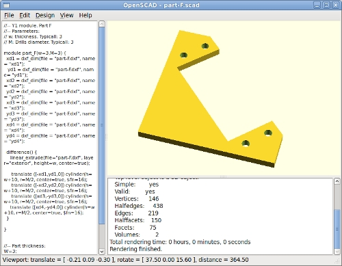
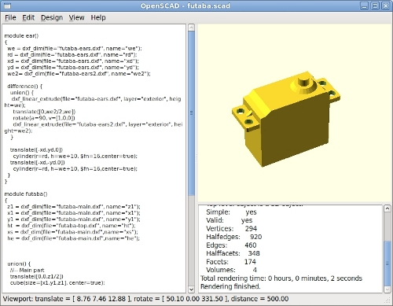
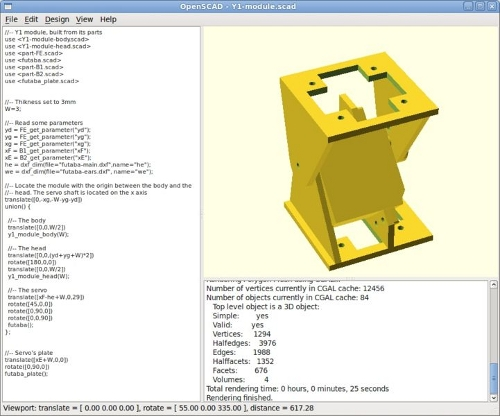
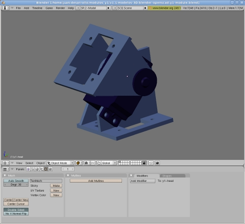

He estado probado el programa OpenScad… ¡Es una herramienta genial! Te permite crear piezas a partir de un script, que al ejecutarse muestra la pieza 3D en la pantalla. Diseñar piezas con OpenScad es como programar. Las piezas son ficheros de texto con instrucciones. Ideal para almacenar las piezas en repositorios o compartirlas.
OpenScad es software libre y multiplataforma.
Para aprender a usar esta herramienta, he empezado por modelar los servos Futaba 3003:

Me he basado en los planos en formato DXF que ya tenía hechos. Con OpenScad se pueden leer planos en 2D y extruirlos para obtener las piezas en 3D.
Lo siguiente ha sido modelar los módulos Y1:

Cualquiera de sus piezas se puede exportar a formato STL bien para ser sacada por una impresora 3D o bien para importarla en otro programa de diseño como por ejemplo Blender:
